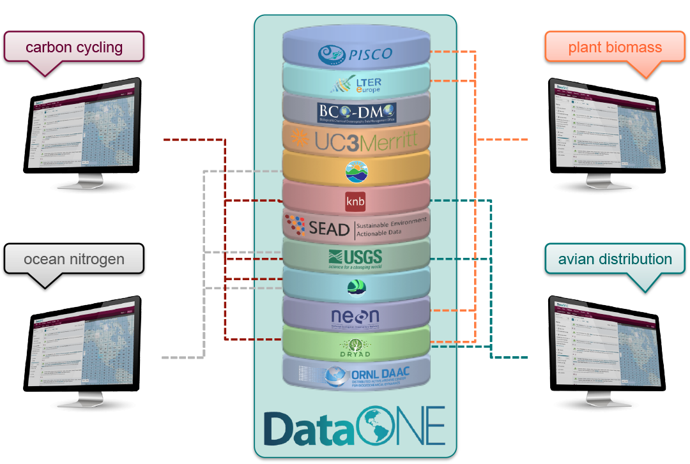
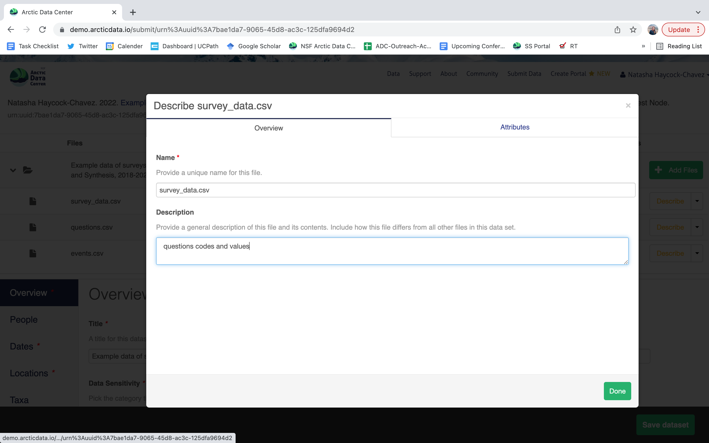
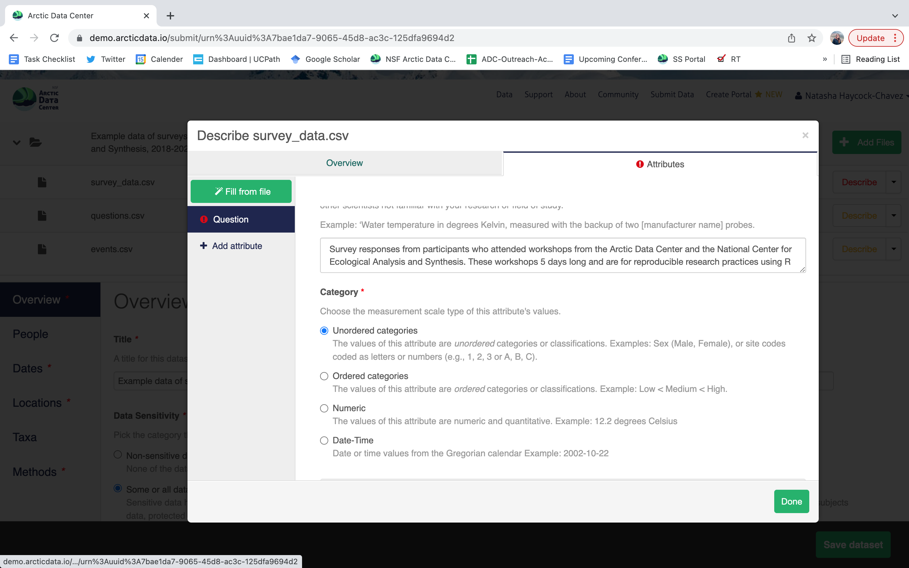
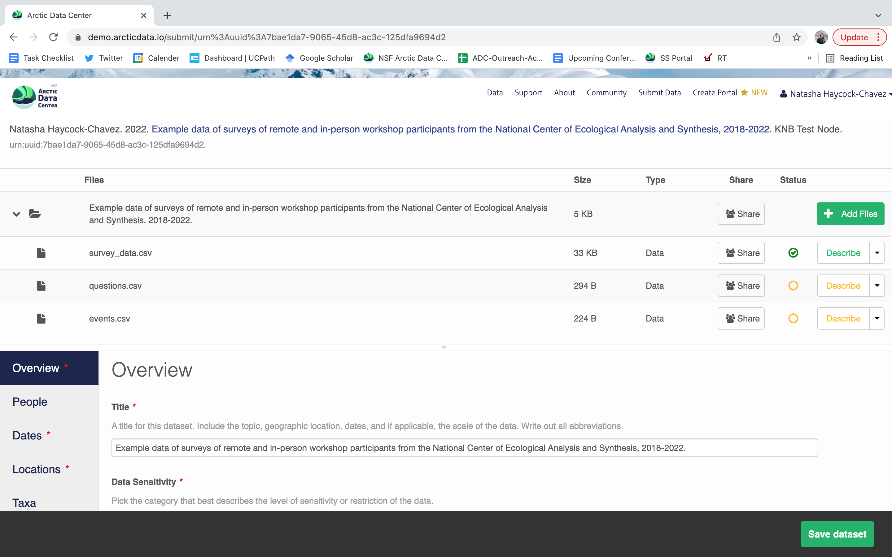

16 Metadata Best Practices and Data Publishing
16.1 Best Practices: Data and Metadata
16.1.1 Learning Objectives
In this lesson, you will learn:
- How to achieve practical reproducibility
- Some best practices for data and metadata management
16.1.2 Best Practices: Overview

The data life cycle has 8 stages: Plan, Collect, Assure, Describe, Preserve, Discover, Integrate, and Analyze. In this section we will cover the following best practices that can help across all stages of the data life cycle:
- Organizing Data
- File Formats
- Large Data Packages
- Metadata
- Data Identifiers
- Provenance
- Licensing and Distribution
Our goal, generally, is to operate within this lifecycle in ways that are FAIR
 The FAIR principles are principles that help guide research so that it is more reusable.
The FAIR principles are principles that help guide research so that it is more reusable.
16.1.2.1 Organizing Data
We’ll spend an entire lesson later on that’s dedicated to organizing your data in a tidy and effective manner, but first, let’s focus on the benefits on having “clean” data and complete metadata.
- Decreases errors from redundant updates
- Enforces data integrity
- Helps you and future researchers to handle large, complex datasets
- Enables powerful search filtering
Much has been written on effective data management to enable reuse. The following two papers offer words of wisdom:
- Some simple guidelines for effective data management. Borer et al. 2009. Bulletin of the Ecological Society of America.
- Nine simple ways to make it easier to (re)use your data. White et al. 2013. Ideas in Ecology and Evolution 6.
In brief, some of the best practices to follow are:
- Have scripts for all data manipulation that start with the uncorrected raw data file and clean the data programmatically before analysis.
- Design your tables to add rows, not columns. A column should be only one variable and a row should be only one observation.
- Include header lines in your tables
- Use non-proprietary file formats (ie, open source) with descriptive file names without spaces.
Non-proprietary file formats are essential to ensure that your data can still be machine readable long into the future. Open formats include text files and binary formats such as NetCDF.

Common switches:
- Microsoft Excel (.xlsx) files - export to text (.txt) or comma separated values (.csv)
- GIS files - export to ESRI shapefiles (.shp)
- MATLAB/IDL - export to NetCDF
When you have or are going to generate large data packages (in the terabytes or larger), it’s important to establish a relationship with the data center early on. The data center can help come up with a strategy to tile data structures by subset, such as by spatial region, by temporal window, or by measured variable. They can also help with choosing an efficient tool to store the data (ie NetCDF or HDF), which is a compact data format that helps parallel read and write libraries of data.
16.1.2.2 Metadata Guidelines
Metadata (data about data) is an important part of the data life cycle because it enables data reuse long after the original collection. Imagine that you’re writing your metadata for a typical researcher (who might even be you!) 30+ years from now - what will they need to understand what’s inside your data files?
The goal is to have enough information for the researcher to understand the data, interpret the data, and then re-use the data in another study.
Another way to think about it is to answer the following questions with the documentation:
- What was measured?
- Who measured it?
- When was it measured?
- Where was it measured?
- How was it measured?
- How is the data structured?
- Why was the data collected?
- Who should get credit for this data (researcher AND funding agency)?
- How can this data be reused (licensing)?
Bibliographic Details
The details that will help your data be cited correctly are:
- a global identifier like a digital object identifier (DOI);
- a descriptive title that includes information about the topic, the geographic location, the dates, and if applicable, the scale of the data
- a descriptive abstract that serves as a brief overview off the specific contents and purpose of the data package
- funding information like the award number and the sponsor;
- the people and organizations like the creator of the dataset (ie who should be cited), the person to contact about the dataset (if different than the creator), and the contributors to the dataset
Discovery Details
The details that will help your data be discovered correctly are:
- the geospatial coverage of the data, including the field and laboratory sampling locations, place names and precise coordinates;
- the temporal coverage of the data, including when the measurements were made and what time period (ie the calendar time or the geologic time) the measurements apply to;
- the taxonomic coverage of the data, including what species were measured and what taxonomy standards and procedures were followed; as well as
- any other contextual information as needed.
Interpretation Details
The details that will help your data be interpreted correctly are:
- the collection methods for both field and laboratory data;
- the full experimental and project design as well as how the data in the dataset fits into the overall project;
- the processing methods for both field and laboratory samples IN FULL;
- all sample quality control procedures;
- the provenance information to support your analysis and modelling methods;
- information about the hardware and software used to process your data, including the make, model, and version; and
- the computing quality control procedures like any testing or code review.
Data Structure and Contents
Well constructed metadata also includes information about the data structure and contents. Everything needs a description: the data model, the data objects (like tables, images, matricies, spatial layers, etc), and the variables all need to be described so that there is no room for misinterpretation.
Variable information includes the definition of a variable, a standardized unit of measurement, definitions of any coded values (such as 0 = not collected), and any missing values (such as 999 = NA).
Not only is this information helpful to you and any other researcher in the future using your data, but it is also helpful to search engines. The semantics of your dataset are crucial to ensure your data is both discoverable by others and interoperable (that is, reusable).
For example, if you were to search for the character string carbon dioxide flux in the general search box at the Arctic Data Center, not all relevant results will be shown due to varying vocabulary conventions (ie, CO2 flux instead of carbon dioxide flux) across disciplines — only datasets containing the exact words carbon dioxide flux are returned. With correct semantic annotation of the variables, your dataset that includes information about carbon dioxide flux but that calls it CO2 flux WOULD be included in that search.

Demonstrates a typical search for “carbon dioxide flux”, yielding 20 datasets. (right) Illustrates an annotated search for “carbon dioxide flux”, yielding 29 datasets. Note that if you were to interact with the site and explore the results of the figure on the right, the dataset in red of Figure 3 will not appear in the typical search for “carbon dioxide flux.”
Rights and Attribution
Correctly assigning a way for your datasets to be cited and reused is the last piece of a complete metadata document. This section sets the scientific rights and expectations for the future on your data, like:
- the citation format to be used when giving credit for the data;
- the attribution expectations for the dataset;
- the reuse rights, which describe who may use the data and for what purpose;
- the redistribution rights, which describe who may copy and redistribute the metadata and the data; and
- the legal terms and conditions like how the data are licensed for reuse.
So, how do you organize all this information? There are a number of metadata standards (think, templates) that you could use, including the Ecological Metadata Language (EML), Geospatial Metadata Standards like ISO 19115 and ISO 19139, the Biological Data Profile (BDP), Dublin Core, Darwin Core, PREMIS, the Metadata Encoding and Transmission Standard (METS), and the list goes on and on. The Arctic Data Center runs on EML.
16.1.3 Data Identifiers
Many journals require a DOI - a digital object identifier - be assigned to the published data before the paper can be accepted for publication. The reason for that is so that the data can easily be found and easily linked to.
At the Arctic Data Center, we assign a DOI to each published dataset. But, sometimes datasets need to be updated. Each version of a dataset published with the Arctic Data Center has a unique identifier associated with it. Researchers should cite the exact version of the dataset that they used in their analysis, even if there is a newer version of the dataset available. When there is a newer version available, that will be clearly marked on the original dataset page with a yellow banner indicating as such.

Having the data identified in this manner allows us to accurately track the dataset usage metrics. The Arctic Data Center tracks the number of citations, the number of downloads, and the number of views of each dataset in the catalog.

We filter out most views by internet bots and repeat views within a small time window in order to make these metrics COUNTER compliant. COUNTER is a standard that libraries and repositories use to provide users with consistent, credible, and comparable usage data.

16.1.4 Data Citation
Researchers should get in the habit of citing the data that they use - even if it’s their own data! - in each publication that uses that data. The Arctic Data Center has taken multiple steps towards providing data citation information for all datasets we hold in our catalog, including a feature enabling dataset owners to directly register citations to their datasets.
We recently implemented this “Register Citation” feature to allow researchers to register known citations to their datasets. Researchers may register a citation for any occasions where they know a certain publication uses or refers to a certain dataset, and the citation will be viewable on the dataset profile within 24 hours.
To register a citation, navigate to the dataset using the DOI and click on the citations tab. Once there, this dialog box will pop up and you’ll be able to register the citation with us. Click that button and you’ll see a very simple form asking for the DOI of the paper and if the paper CITES the dataset (that is, the dataset is explicitly identified or linked to somewhere in the text or references) or USES the dataset (that is, uses the dataset but doesn’t formally cite it).

We encourage you to make this part of your workflow, and for you to let your colleagues know about it too!
16.1.5 Provanance & Preserving Computational Workflows

While the Arctic Data Center, Knowledge Network for Biocomplexity, and similar repositories do focus on preserving data, we really set our sights much more broadly on preserving entire computational workflows that are instrumental to advances in science. A computational workflow represents the sequence of computational tasks that are performed from raw data acquisition through data quality control, integration, analysis, modeling, and visualization.

In addition, these workflows are often not executed all at once, but rather are divided into multiple workflows, each with its own purpose. For example, a data acquistion and cleaning workflow often creates a derived and integrated data product that is then picked up and used by multiple downstream analytical workflows that produce specific scientific findings. These workflows can each be archived as distinct data packages, with the output of the first workflow becoming the input of the second and subsequent workflows.

In an effort to make data more reproducible, datasets also support provenance tracking. With provenance tracking, users of the Arctic Data Center can see exactly what datasets led to what product, using the particular script or workflow that the researcher used.

This is a useful tool to make data more compliant with the FAIR principles. In addition to making data more reproducible, it is also useful for building on the work of others; you can produce similar visualizations for another location, for example, using the same code.
RMarkdown itself can be used as a provenance tool, as well - by starting with the raw data and cleaning it programmatically, rather than manually, you preserve the steps that you went through and your workflow is reproducible.

16.2 Data Documentation and Publishing
16.2.1 Learning Objectives
In this lesson, you will learn:
- About open data archives, especially the Arctic Data Center
- What science metadata are and how they can be used
- How data and code can be documented and published in open data archives
- Web-based submission

16.2.3 Data repositories: built for data (and code)
- GitHub is not an archival location
- Examples of dedicated data repositories: KNB, Arctic Data Center, tDAR, EDI, Zenodo
- Rich metadata
- Archival in their mission
- Certification for repositories: https://www.coretrustseal.org/
- Data papers, e.g., Scientific Data
- List of data repositories: http://re3data.org
- Repository finder tool: https://repositoryfinder.datacite.org/

16.2.4 Metadata
Metadata are documentation describing the content, context, and structure of data to enable future interpretation and reuse of the data. Generally, metadata describe who collected the data, what data were collected, when and where they were collected, and why they were collected.
For consistency, metadata are typically structured following metadata content standards such as the Ecological Metadata Language (EML). For example, here’s an excerpt of the metadata for a sockeye salmon dataset:
<?xml version="1.0" encoding="UTF-8"?>
<eml:eml packageId="df35d.442.6" system="knb"
xmlns:eml="eml://ecoinformatics.org/eml-2.1.1">
<dataset>
<title>Improving Preseason Forecasts of Sockeye Salmon Runs through
Salmon Smolt Monitoring in Kenai River, Alaska: 2005 - 2007</title>
<creator id="1385594069457">
<individualName>
<givenName>Mark</givenName>
<surName>Willette</surName>
</individualName>
<organizationName>Alaska Department of Fish and Game</organizationName>
<positionName>Fishery Biologist</positionName>
<address>
<city>Soldotna</city>
<administrativeArea>Alaska</administrativeArea>
<country>USA</country>
</address>
<phone phonetype="voice">(907)260-2911</phone>
<electronicMailAddress>mark.willette@alaska.gov</electronicMailAddress>
</creator>
...
</dataset>
</eml:eml>That same metadata document can be converted to HTML format and displayed in a much more readable form on the web: https://knb.ecoinformatics.org/#view/doi:10.5063/F1F18WN4
 And, as you can see, the whole dataset or its components can be downloaded and
reused.
And, as you can see, the whole dataset or its components can be downloaded and
reused.
Also note that the repository tracks how many times each file has been downloaded, which gives great feedback to researchers on the activity for their published data.
16.2.5 Structure of a data package
Note that the dataset above lists a collection of files that are contained within the dataset. We define a data package as a scientifically useful collection of data and metadata that a researcher wants to preserve. Sometimes a data package represents all of the data from a particular experiment, while at other times it might be all of the data from a grant, or on a topic, or associated with a paper. Whatever the extent, we define a data package as having one or more data files, software files, and other scientific products such as graphs and images, all tied together with a descriptive metadata document.

These data repositories all assign a unique identifier to every version of every
data file, similarly to how it works with source code commits in GitHub. Those identifiers
usually take one of two forms. A DOI identifier is often assigned to the metadata
and becomes the publicly citable identifier for the package. Each of the other files
gets a global identifier, often a UUID that is globally unique. In the example above,
the package can be cited with the DOI doi:10.5063/F1F18WN4,and each of the individual
files have their own identifiers as well.
16.2.6 DataONE Federation
DataONE is a federation of dozens of data repositories that work together to make their systems interoperable and to provide a single unified search system that spans the repositories. DataONE aims to make it simpler for researchers to publish data to one of its member repositories, and then to discover and download that data for reuse in synthetic analyses.
DataONE can be searched on the web (https://search.dataone.org/), which effectively allows a single search to find data from the dozens of members of DataONE, rather than visiting each of the (currently 44!) repositories one at a time.

16.2.7 Publishing data from the web
Each data repository tends to have its own mechanism for submitting data and providing metadata. With repositories like the KNB Data Repository and the Arctic Data Center, we provide some easy to use web forms for editing and submitting a data package. This section provides a brief overview of some highlights within the data submission process, in advance of a more comprehensive hands-on activity.
ORCiDs
We will walk through web submission on https://demo.arcticdata.io, and start by logging in with an ORCID account. ORCID provides a common account for sharing scholarly data, so if you don’t have one, you can create one when you are redirected to ORCID from the Sign In button.

ORCID is a non-profit organization made up of research institutions, funders, publishers and other stakeholders in the research space. ORCID stands for Open Researcher and Contributor ID. The purpose of ORCID is to give researchers a unique identifier which then helps highlight and give credit to researchers for their work. If you click on someone’s ORCID, their work and research contributions will show up (as long as the researcher used ORCID to publish or post their work).
After signing in, you can access the data submission form using the Submit button. Once on the form, upload your data files and follow the prompts to provide the required metadata.

Sensitive Data Handling
Underneath the Title field, you will see a section titled “Data Sensitivity”. As the primary repository for the NSF Office of Polar Programs Arctic Section, the Arctic Data Center accepts data from all disciplines. This includes data from social science research that may include sensitive data, meaning data that contains personal or identifiable information. Sharing sensitive data can pose challenges to researchers, however sharing metadata or anonymized data contributes to discovery, supports open science principles, and helps reduce duplicate research efforts.
To help mitigate the challenges of sharing sensitive data, the Arctic Data Center has added new features to the data submission process influenced by the CARE Principles for Indigenous Data Governance (Collective benefit, Authority to control, Responsibility, Ethics). Researchers submitting data now have the option to choose between varying levels of sensitivity that best represent their dataset. Data submitters can select one of three sensitivity level data tags that best fit their data and/or metadata. Based on the level of sensitivity, guidelines for submission are provided. The data tags range from non-confidential information to maximally sensitive information.
The purpose of these tags is to ethically contribute to open science by making the richest set of data available for future research. The first tag, “non-sensitive data”, represents data that does not contain potentially harmful information, and can be submitted without further precaution. Data or metadata that is “sensitive with minimal risk” means that either the sensitive data has been anonymized and shared with consent, or that publishing it will not cause any harm. The third option, “some or all data is sensitive with significant risk” represents data that contains potentially harmful or identifiable information, and the data submitter will be asked to hold off submitting the data until further notice. In the case where sharing anonymized sensitive data is not possible due to ethical considerations, sharing anonymized metadata still aligns with FAIR (Findable, Accessible, Interoperable, Reproducible) principles because it increases the visibility of the research which helps reduce duplicate research efforts. Hence, it is important to share metadata, and to publish or share sensitive data only when consent from participants is given, in alignment with the CARE principles and any IRB requirements.
You will continue to be prompted to enter information about your research, and in doing so, create your metadata record. We recommend taking your time because the richer your metadata is, the more easily reproducible and usable your data and research will be for both your future self and other researchers. Detailed instructions are provided below for the hands-on activity.
Research Methods
Methods are critical to accurate interpretation and reuse of your data. The editor allows you to add multiple different methods sections, so that you can include details of sampling methods, experimental design, quality assurance procedures, and/or computational techniques and software.

As part of a recent update, researchers are now asked to describe the ethical data practices used throughout their research. The information provided will be visible as part of the metadata record. This feature was added to the data submission process to encourage transparency in data ethics. Transparency in data ethics is a vital part of open science and sharing ethical practices encourages deeper discussion about data reuse and ethics.
We encourage you to think about the ethical data and research practices that were utilized during your research, even if they don’t seem obvious at first.
File and Variable Level Metadata
In addition to providing information about, (or a description of) your dataset, you can also provide information about each file and the variables within the file. By clicking the “Describe” button you can add comprehensive information about each of your measurements, such as the name, measurement type, standard units etc.

Provenance
The data submission system also provides the opportunity for you to provide provenance information, describe the relationship between package elements. When viewing your dataset followinng submission, After completing your data description and submitting your dataset you will see the option to add source data and code, and derived data and code.

These are just some of the features and functionality of the Arctic Data Center submission system and we will go through them in more detail below as part of a hands-on activity.
16.2.7.1 Download the data to be used for the tutorial
I’ve already uploaded the test data package, and so you can access the data here:
Grab both CSV files, and the R script, and store them in a convenient folder.
16.2.7.2 Login via ORCID
We will walk through web submission on https://demo.arcticdata.io, and start by logging in with an ORCID account. ORCID provides a common account for sharing scholarly data, so if you don’t have one, you can create one when you are redirected to ORCID from the Sign In button.
When you sign in, you will be redirected to orcid.org, where you can either provide your existing ORCID credentials or create a new account. ORCID provides multiple ways to login, including using your email address, an institutional login from many universities, and/or a login from social media account providers. Choose the one that is best suited to your use as a scholarly record, such as your university or agency login.
16.2.7.3 Create and submit the dataset
After signing in, you can access the data submission form using the Submit button. Once on the form, upload your data files and follow the prompts to provide the required metadata.
16.2.7.3.1 Click Add Files to choose the data files for your package
You can select multiple files at a time to efficiently upload many files.
The files will upload showing a progress indicator. You can continue editing metadata while they upload.
16.2.7.3.2 Enter Overview information
This includes a descriptive title, abstract, and keywords.

 You also must enter a funding award number and choose a license. The funding field will
search for an NSF award identifier based on words in its title or the number itself. The licensing options are CC-0 and CC-BY, which both allow your data to be downloaded and re-used by other researchers.
You also must enter a funding award number and choose a license. The funding field will
search for an NSF award identifier based on words in its title or the number itself. The licensing options are CC-0 and CC-BY, which both allow your data to be downloaded and re-used by other researchers.
- CC-0 Public Domain Dedication: “…can copy, modify, distribute and perform the work, even for commercial purposes, all without asking permission.”
- CC-BY: Attribution 4.0 International License: “…free to…copy,…redistribute,…remix, transform, and build upon the material for any purpose, even commercially,…[but] must give appropriate credit, provide a link to the license, and indicate if changes were made.”
16.2.7.3.3 People Information
Information about the people associated with the dataset is essential to provide credit through citation and to help people understand who made contributions to the product. Enter information for the following people:
- Creators - all the people who should be in the citation for the dataset
- Contacts - one is required, but defaults to the first Creator if omitted
- Principal Investigators
- Any others that are relevant
For each, please provide their ORCID identifier, which helps link this dataset to their other scholarly works.

16.2.7.3.4 Location Information
The geospatial location that the data were collected is critical for discovery and interpretation of the data. Coordinates are entered in decimal degrees, and be sure to use negative values for West longitudes. The editor allows you to enter multiple locations, which you should do if you had noncontiguous sampling locations. This is particularly important if your sites are separated by large distances, so that spatial search will be more precise.

Note that, if you miss fields that are required, they will be highlighted in red to draw your attention. In this case, for the description, provide a comma-separated place name, ordered from the local to global:
- Mission Canyon, Santa Barbara, California, USA

16.2.7.3.5 Temporal Information
Add the temporal coverage of the data, which represents the time period to which data apply. Again, use multiple date ranges if your sampling was discontinuous.
16.2.7.3.6 Methods
Methods are critical to accurate interpretation and reuse of your data. The editor allows you to add multiple different methods sections, so that you can include details of sampling methods, experimental design, quality assurance procedures, and/or computational techniques and software. Please be complete with your methods sections, as they are fundamentally important to reuse of the data.
16.2.7.3.7 Save a first version with Submit
When finished, click the Submit Dataset button at the bottom.
If there are errors or missing fields, they will be highlighted.
Correct those, and then try submitting again. When you are successful, you should
see a large green banner with a link to the current dataset view. Click the X
to close that banner if you want to continue editing metadata.
 Success!
Success!
16.2.7.4 File and variable level metadata
The final major section of metadata concerns the structure and content of your data files. In this case, provide the names and descriptions of the data contained in each file, as well as details of their internal structure.
For example, for data tables, you’ll need the name, label, and definition of each variable in your file. Click the Describe button to access a dialog to enter this information.
 The Attributes tab is where you enter variable (aka attribute) information, including:
- variable name (for programs)
- variable label (for display)
- variable definition (be specific)
- type of measurement

- units & code definitions
 You’ll need to add these definitions for every variable (column) in
the file. When done, click Done.
Now, the list of data files will show a green checkbox indicating that you have
fully described that file’s internal structure. Proceed with the other CSV
files, and then click Submit Dataset to save all of these changes.
You’ll need to add these definitions for every variable (column) in
the file. When done, click Done.
Now, the list of data files will show a green checkbox indicating that you have
fully described that file’s internal structure. Proceed with the other CSV
files, and then click Submit Dataset to save all of these changes.
 After you get the big green success message, you can visit your dataset and review all of the information that you provided. If you find any errors, simply click Edit again to make changes.
16.2.7.5 Add workflow provenance
Understanding the relationships between files (aka provenance) in a package is critically important, especially as the number of files grows. Raw data are transformed and integrated to produce derived data, which are often then used in analysis and visualization code to produce final outputs. In the DataONE network, we support structured descriptions of these relationships, so researchers can see the flow of data from raw data to derived to outputs.
You add provenance by navigating to the data table descriptions and selecting the
Add buttons to link the data and scripts that were used in your computational
workflow. On the left side, select the Add circle to add an input data source
to the filteredSpecies.csv file. This starts building the provenance graph to
explain the origin and history of each data object.
 The linkage to the source dataset should appear.
The linkage to the source dataset should appear.
Then you can add the link to the source code that handled the conversion
between the data files by clicking on Add arrow and selecting the R script:

 The diagram now shows the relationships among the data files and the R script, so
click Submit to save another version of the package.
The diagram now shows the relationships among the data files and the R script, so
click Submit to save another version of the package.
 Et voilà! A beautifully preserved data package!
Et voilà! A beautifully preserved data package!